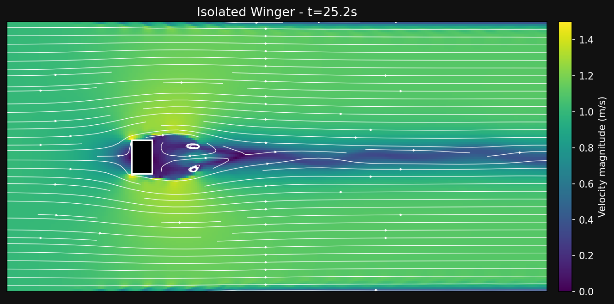
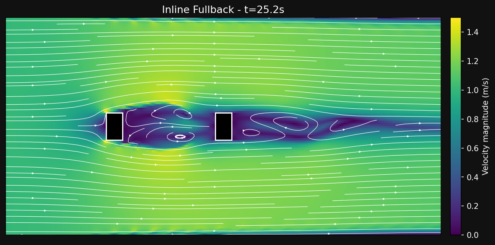
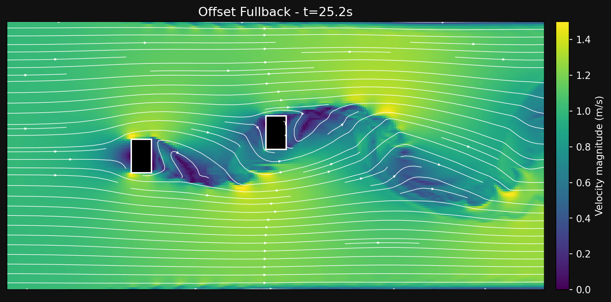
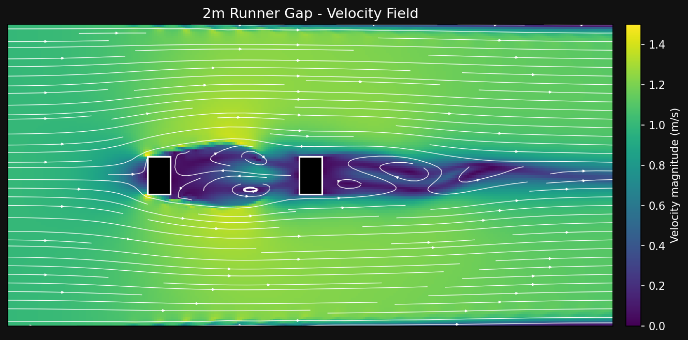
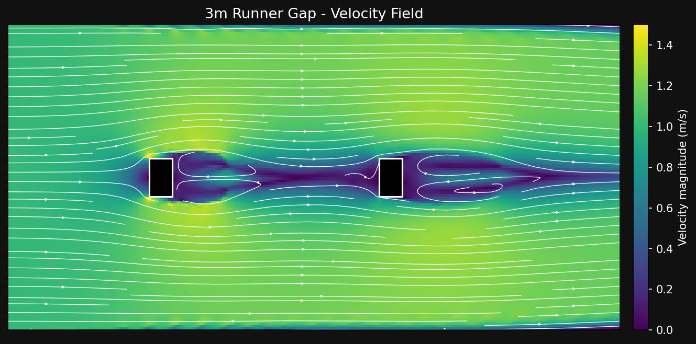

The Physics of the Overlapping Run
An overlapping run is one of the most common attacking patterns in football. The fullback sprints past the winger on the outside, creating a 2v1 overload against the opposing fullback. The winger draws the defender inward by holding width or cutting inside, and the fullback exploits the space on the outside. This pattern appears across every formation. In a 4-3-3 the fullback times the run as the winger checks inside. In a 3-5-2 the wing-back covers the entire flank from deep. In a 4-4-2 the fullback provides the wide outlet when the wide midfielder tucks in.
The tactical benefit of overloading is evident, but can physics further explain the advantage? When the fullback runs directly behind the winger, they enter the leader's low-velocity wake, reducing the aerodynamic drag they must overcome. First I analyzed three scenarios: an isolated winger running alone, a fullback running directly behind the winger (inline), and a fullback with a lateral offset. Based on these results, I then examined how the wake effects changes with distance by testing the inline scenario at three distances.
The Winger and the Fullback
The three-panel video below shows $\Phi$Flow velocity fields for these three configurations at $Re \approx 2 \times 10^4$ (8 m × 4 m domain, $U = 1\ \text{m/s}$): an isolated winger, an inline fullback (2 m centre-to-centre gap), and an echelon offset (2 m longitudinal, 0.35 m lateral). In all three cases, the incoming flow is uniform from left to right. The colour map encodes velocity magnitude: dark regions are low-velocity wake, bright regions are freestream flow. The solo runner sheds a wide, energetic wake with strong velocity deficits extending several body lengths downstream. When a second runner is positioned directly behind in the inline case, the leader’s wake engulfs the trailer, dramatically reducing the dynamic pressure on its leading face. A lateral offset of just 0.35 m places the trailer at the wake shear layer, where it remains partially exposed to the freestream.
Individual Case Analysis

The solo runner sheds a wide, energetic wake stretching across the full height of the domain. Strong vortices form behind the body, visible as chevron-shaped low-velocity bands in the velocity field. The velocity deficit extends well beyond the frame, creating a broad drafting zone. Any trailing runner who can position directly behind this wake will experience maximum pressure shielding.

With an inline trailing runner at a 2 m gap, the two bodies share a single unified low-velocity zone. The leader’s wake completely engulfs the trailer, visible as the dark region that seamlessly wraps around both runners. The trailer’s leading face experiences significantly reduced dynamic pressure, yielding a drag of just 0.087, a 42.2% reduction from the isolated case. The streamlines show smooth flow around both bodies with no additional separation induced by the trailer.

A small lateral offset of 0.35 m places the trailing runner at the shear layer between the leader’s wake and the freestream. The velocity field shows the trailer’s right side exposed to high-velocity freestream flow (bright yellow/green), while the left side sits in the wake (dark purple/blue). This asymmetric exposure largely cancels the pressure differential across the body, resulting in a drag of 0.145, just a 3.9% reduction. The streamlines reveal the offset trailer cutting through the wake boundary, shedding its own secondary wake.
Drag comparison (pressure-integrated): The isolated winger sets the baseline at 0.151. The inline trailing runner sees a 42.2% reduction at 2 m gap (inline=0.087). The offset trailing runner shows negligible change at 3.9% (offset=0.145).
| Configuration | Gap (m) | Lateral Offset (m) | Drag | Drag Reduction | Wake Interaction |
|---|---|---|---|---|---|
| Isolated Winger | — | — | 0.151 | baseline | Wide, energetic wake; strong vortex shedding |
| Inline Fullback | 2.0 | 0.0 | 0.087 | 42.2% | Fully immersed in leader’s wake |
| Offset Fullback | 2.0 | 0.35 | 0.145 | 3.9% | At wake-freestream shear layer |
The inline configuration at 2 m gap delivers the maximum 42.2% drag reduction. But how does this advantage decay as the trailing fullback drops further behind the winger? The analysis below maps the drag reduction from the optimal drafting zone out to 4 m, where the wake has largely dissipated.
Fullback Distance Analysis
The inline configuration at 2 m produced the maximum 42.2% drag reduction, but the optimal distance for an overlap depends on how early the fullback starts the run. Does the benefit persist at longer distances, or does it decay quickly? To answer this, I tested the inline winger and fullback at three distances (2 m, 3 m, and 4 m centre-to-centre). As the distance increases, the trailing fullback progressively moves out of the winger's low-velocity wake. This is visible as a shrinking dark (low-velocity) region around the trailer’s leading face and a corresponding increase in drag, from 0.087 at 2 m to 0.109 at 4 m. The streamlines in the static images below reveal how the wake structure changes with distance.

At 2 m, the fullback is fully immersed in the winger's wake at 2 m. The low-velocity region (dark purple) completely surrounds the trailing fullback, with no freestream penetration reaching its leading face. The two bodies behave almost as a single streamlined object, producing maximum drag reduction.

At 3 m, the wake begins to recover. Higher-velocity fluid from the freestream wraps around the winger and reaches the fullback's leading face, visible as the lighter (green/yellow) region between the two bodies. The dark low-velocity zone no longer fully engulfs the trailing fullback, and the drag reduction drops to 37.3%.

By 4 m, the wake has largely dissipated before reaching the trailing fullback. Only the lower half of the fullback's leading face remains partially shielded; the upper half experiences near-freestream velocity. The streamlines show the wake reattaching well before the trailing fullback, confirming that the drafting benefit has decayed to near baseline (27.8% reduction).
| Gap (m) | Drag | Drag Reduction | Wake Interaction |
|---|---|---|---|
| 2.0 | 0.087 | 42.2% | Fully immersed; bodies behave as a single streamlined object |
| 3.0 | 0.095 | 37.3% | Wake begins recovering; freestream reaches trailer leading face |
| 4.0 | 0.109 | 27.8% | Wake largely dissipated; near-baseline drag |
Having mapped the monotonic decay from 42.2% at 2 m to 27.8% at 4 m, what does that 42% reduction mean in tangible terms for a sprinting player?
Energy Model
Drag power is modelled as $P = F_D \cdot v = \frac{1}{2} \rho C_D A v^3$. At $v = 5\ \text{m/s}$ (a sprinting fullback at ~18 km/h), a 42.2% drag reduction saves roughly 70–95 J over a 30 m overlapping run, about 15–22% of the kinetic energy of a sprinting player. This is the marginal energy that makes the difference between a firm cross to the far post and a limp ball that reaches the goalkeeper first. This is a simplified energy model; future work would integrate metabolic cost estimates from biomechanics literature to account for muscle efficiency and recovery between sprints.
How do these energy savings translate to on-pitch decisions?
Tactical Connection
The drafting benefit is strongest when the trailing player sits 1–2 m behind the lead runner, roughly the distance between a winger holding width and an overlapping fullback accelerating on the outside. The gap sweep confirms this: 2 m yields 42.2%, 3 m drops to 37.3%, and 4 m decays to 27.8%. Beyond 4 m the wake has largely dissipated and the benefit approaches the solo baseline. Formations with advanced wing-backs (3-5-2) create the longest overlapping runs. The wing-back sprints from deep, covering 40+ m while the winger draws defenders centrally, though the initial 15–20 m sees negligible drafting benefit before the wing-back reaches the 1–2 m window. The 4-3-3 and 4-4-2 produce shorter, sharper overlaps at the edge of the final third, where the optimal drafting distance aligns naturally with the geometry of the attacking shape. The 4-2-3-1’s wide attackers push high and narrow, requiring the fullback to cover more ground. These overlaps may see a reduced benefit as the gap opens beyond 3 m.